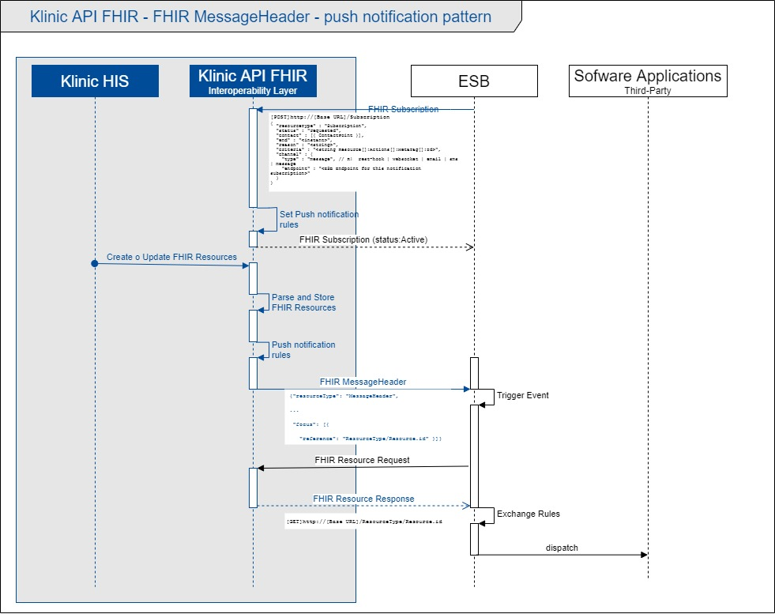

Klinic API FHIR Implementation Guide: IG Release 1 - Digital Ware S.A.
1.0 - trial-use
Klinic API FHIR Implementation Guide: IG Release 1 - Digital Ware S.A. - Local Development build (v1.0). See the Directory of published versions
El funcionamiento de Klinic API FHIR, está basado en la arquitectura orientada a recursos (ROA), empleando RESTful API como mecanismo de intercambio, para garantizar la disponibilidad de información mediante recursos HL7 FHIR.
De esta forma, otras aplicaciones de software del ecosistema de información de una organización, pueden consultar en Klinic API FHIR la información que requieran mediante solicitudes HTTP RESTful.
Empleando el mismo mecanismo de intercambio, otras aplicaciones autorizadas pueden enviar/publicar recursos de información en Klinic API FHIR, que será finalmente procesada por Klinic HIS.
El numeral 3.1.0 de la documentación del estándar HL7 FHIR, describe cómo se consultan (y administran) los recursos de información FHIR, mediante el uso de RESTful API.
Eventualmente, existen aplicaciones de software cuyo mecanismo de interoperabilidad está basado en la arquitectura dirigida por eventos y requieren la recepción de mensajes (generalmente mensajes HL7 V2x).
Para estos casos, Klinic API FHIR, emplea recursos FHIR tipo MessageHeader, que permiten notificar mediante eventos de mensajería (push), la creación o actualización de ciertos recursos.
Digital Ware, ha diseñado un perfil de recursos MessageHeader (Klinic FHIR Message), empleados por su capa de interoperabilidad para soportar este patrón de notificación.
La definición de qué tipos de recursos deben ser notificados y sus reglas de envío, son programadas en la capa de interoperabilidad (Klinic API FHIR) y administrados con el recurso Subscription, a través del cual una aplicación tercera puede suscribirse para recibir un mensaje en determinado evento (veáse campo criteria ) al endpoint que se indique(veáse campo channel ).
El recurso MessageHeader enviado por la capa de interoperabilidad, contiene un mínimo de carga útil, que se limita al tipo de recurso foco y su id (o eventualmente su end point).
A partir de esa información, la aplicación receptora del mensaje (MessageHeader), puede proceder al consumo/lectua (GET) del recurso en Klinic API FHIR.
Este patrón de interacción en Klinic API FHIR, está diseñado principalmente para recursos relacionados con información de órdenes (MedicationRequest, ServiceRequest y SupplyRequest).
El numeral 2.47 de la documentación del estándar HL7 FHIR, describe la estructura y uso del recurso MessageHeader.
El siguiente diagrama ilustra la secuencia de interacciones del patrón de notificaciones mediante el envío de recursos FHIR tipo MessageHeader.

La aplicación tercera registra un recurso subscription con status requested en Klinic API FHIR, quien registra la regla de notificación y como resultado de la operación retorna el recurso creado con su status en active.
{
"resourceType" : "Subscription",
"status" : "requested",
"contact" : [{ ContactPoint }],
"end" : "<instant>",
"reason" : "<string>",
"criteria" : "<string>",// Resource[]:Actions[]:MetaTag[]:Id>,
"channel" : {
"type" : "message",
"endpoint" : "<string>"// Third Party Endpoint for this notification subscription"
}
}
Una vez se registra la creación o un cambio en un registro electrónico de salud, Klinic-HIS genera el recurso FHIR equivalente y procede a enviarlo (POST, PUT) a su capa de interoperabilidad (Klinic API FHIR).
Klinic API FHIR procesa el recurso y lo almacena, para permitir que esté disponible para que otras aplicaciones de software puedan consumirlo (GET).
Para determinados tipos casos, en los cuales es necesario que otra aplicación de software sea notificada acerca de la creación o actualización de un recurso disponible en Klinic API FHIR, la capa de interoperabilidad se encarga de procesar una serie de reglas y procede a generar un recurso MessageHeader, para ser enviado.
La capa de interoperabilidad, envía un recurso MessageHeader, el cual contiene el foco referencia al tipo de recurso y su id.
A partir del tipo de recurso y su id, la aplicación receptora del mensaje (ej: ESB) puede realizar el consumo/lectura (GET) del recurso en Klinic API FHIR.
Si la aplicación receptora del mensaje es una plataforma ESB, según las reglas de negocio, puede proceder a transformar y enviar (distribuír) la información a otras aplicaciones de software del ecosistema de información de la organización.
El elemento MessageHeader.eventCoding contiene el código que identifica el evento que representa este mensaje.
Para el perfil Klinic FHIR Message se han definido los siguientes códigos.
| Code | Display | Definition |
|---|---|---|
| CREATE | Resource creation notification | Code indicating that the message event is notifying another system that a resource has been created in Klinic API FHIR. |
| UPDATE | Resource update notification | Code indicating that the message event is notifying another system that a resource has been updated in Klinic API FHIR. |
El siguiente ejemplo, contiene un recurso MessageHeader de notificación de creación de un recurso tipo ServiceRequest.
{
"resourceType": "MessageHeader",
"id": "d3c28245-6e76-4816-8bef-07bde3c45e7c",
"meta": {
"lastUpdated": "2021-02-09T14:23:17-05:00"
},
"eventCoding": {
"system": "http://digitalware.com.co/salud/fhir/CodeSystem/MessageEvent",
"code": "CREATE",
"display": "Resource creation notification"
},
"destination": [
{
"name": "ESB platform",
"endpoint": "http://127.0.0.1:8443/esb/end-point"
}
],
"source": {
"software": "Klinic API FHIR",
"endpoint": "http://127.0.0.1:7000/klinic-api-fhir"
},
"focus": [
{
"reference": "ServiceRequest/dc6a94cc-1946-4326-89c3-d27888a90f7e",
"type": "ServiceRequest"
}
]
}
El siguiente ejemplo, contiene un recurso MessageHeader de notificación de actualización de un recurso tipo ServiceRequest.
En este ejemplo, además se expone el uso de una URL absoluta de referencia al recurso foco (tipo ServiceRequest).
{
"resourceType": "MessageHeader",
"id": "97848708-6ea4-4706-892d-bee737630488",
"meta": {
"lastUpdated": "2021-02-09T14:50:00-05:00"
},
"eventCoding": {
"system": "http://digitalware.com.co/salud/fhir/CodeSystem/MessageEvent",
"code": "UPDATE",
"display": "Resource update notification"
},
"destination": [
{
"name": "ESB platform",
"endpoint": "http://127.0.0.1:8443/esb/end-point"
}
],
"source": {
"software": "Klinic API FHIR",
"endpoint": "http://127.0.0.1:7000/klinic-api-fhir"
},
"focus": [
{
"reference": "http://127.0.0.1:7000/klinic-api-fhir/ServiceRequest/dc6a94cc-1946-4326-89c3-d27888a90f7e",
"type": "ServiceRequest"
}
]
}
El siguiente ejemplo, contiene un recurso MessageHeader de notificación de creación de un recurso tipo ServiceRequest.
<?xml version="1.0" encoding="UTF-8"?>
<MessageHeader xmlns="http://hl7.org/fhir">
<id value="d3c28245-6e76-4816-8bef-07bde3c45e7c"/>
<meta>
<lastUpdated value="2021-02-09T14:23:17-05:00"/>
</meta>
<eventCoding>
<system value="http://digitalware.com.co/salud/fhir/CodeSystem/MessageEvent"/>
<code value="CREATE"/>
<display value="Resource creation notification"/>
</eventCoding>
<destination>
<name value="ESB platform"/>
<endpoint value="http://127.0.0.1:8443/esb/end-point"/>
</destination>
<source>
<software value="Klinic API FHIR"/>
<endpoint value="http://127.0.0.1:7000/klinic-api-fhir"/>
</source>
<focus>
<reference value="ServiceRequest/dc6a94cc-1946-4326-89c3-d27888a90f7e"/>
<type value="ServiceRequest"/>
</focus>
</MessageHeader>
El siguiente ejemplo, contiene un recurso MessageHeader de notificación de actualización de un recurso tipo ServiceRequest.
En este ejemplo, además se expone el uso de una URL absoluta de referencia al recurso foco (tipo ServiceRequest).
<?xml version="1.0" encoding="UTF-8"?>
<MessageHeader xmlns="http://hl7.org/fhir">
<id value="97848708-6ea4-4706-892d-bee737630488"/>
<meta>
<lastUpdated value="2021-02-09T14:50:00-05:00"/>
</meta>
<eventCoding>
<system value="http://digitalware.com.co/salud/fhir/CodeSystem/MessageEvent"/>
<code value="UPDATE"/>
<display value="Resource update notification"/>
</eventCoding>
<destination>
<name value="ESB platform"/>
<endpoint value="http://127.0.0.1:8443/esb/end-point"/>
</destination>
<source>
<software value="Klinic API FHIR"/>
<endpoint value="http://127.0.0.1:7000/klinic-api-fhir"/>
</source>
<focus>
<reference value="http://127.0.0.1:7000/klinic-api-fhir/ServiceRequest/dc6a94cc-1946-4326-89c3-d27888a90f7e"/>
<type value="ServiceRequest"/>
</focus>
</MessageHeader>